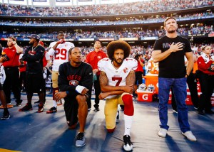
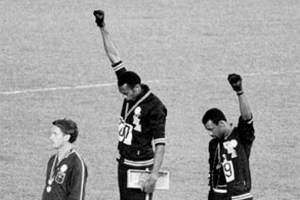

Why Sports Protests are Important
October 11,2016

Recently American Anthem protests have become the hot topic in American sports. It has come to the point that the news of these protests sometimes overshadows the sports that they are involved in. Personally that is what has fascinated me the most about these protests, not the fact that they are taking place but rather the public reaction to such a simple gesture.
If you don’t recall the person who started this protest was Colin Kaepernick, a backup quarterback for the San Francisco 49ers. This minor protest of not standing for the national anthem was conducted by Kaepernick to bring attention to the unfair oppression of African Americans as a group in America. In Kaepernick’s words he will not “show pride in a flag for a country that oppresses Black people and people of color”. Despite Kaepernick’s position as a backup, his simple gesture exploded across social media garnering mass support and reprimand from different groups. Since then many others have joined in their support across most major sports and at the college level and high school level as well.
The protests have sparked outrage among many in the media; including Hall of Fame coach Mike Ditka who commented that if Kaepernick doesn’t like this country he should, “get the hell out”. Other individuals such as Dabo Swinney don’t seem to have a problem with this protest so much as causing distractions on the field by using the team as a platform. Some have similar sentiments as myself , just shocked that so much has come out of not standing for a few minutes before the game.
Personally I have just been trying to wrap my head around the significance of what may be the first large scale sports protest in my short lifetime. As a sports fan in his twenties I’ve heard many times about how actions and protests in sports have been used to express social and political issues that need to be addressed, the 1968 fist raise of Tommie Smith and John Carlos at the Mexico City Olympics, the 1969 BYU protests of the black 14, and of course Muhammad Ali’s protest of the Vietnam war which caused him to lose his Heavyweight title belt. While there may have been some small instances of protest since my birth there has certainly been nothing of this magnitude.

Although protests in sports is not uncommon the outrage surrounding them is palpable, and I admit I can understand why. Most people use sports as an escape from the troubles generated by a chaotic world. People don’t want to be reminded of corrupt political systems, a slowly overheating planet, or cultural inequality when they are supporting the team on the field; but in many ways that is the point of these protests. Regardless of your stance on it racial inequality is not an issue you can escape from, and there should be a focus on fixing it instead of ignoring a clear fault in the world right now. The first step to that is acknowledging there is a problem. Sports is the perfect outlet for this especially considering these protests first occurred in the sport of football where a large majority of the players are from backgrounds directly affected by this issue. This is why I feel that, despite the frustrations many have with these protests, that sports is the perfect outlet for this issue; almost everyone is involved or interested in regardless of their age, class, race, or religion everyone watches sports which is why the medium is so good at spreading messages.
I understand why many fans are upset; this is considered an insult to America by people who are essentially living the American dream. Through hard work and perseverancethese individuals are now playing a sport for a career and most are getting paid more than middle class office workers. What right do these individuals have to be protesting?
The truth is though it’s not about the players on the field; it’s about the community at large. As a white male in America I can’t pretend to understand the difficulties non-whites have to deal with on a regular basis, but I can speak on what I’ve seen and heard. Regardless of what you think about the job or class equality you can see a clear difference between cultural communities. I’ve never had to worry about the prospect that the police could one day kick in my door and seize all my property for no clear reason. I’ve never had to worry about scaring people based on the clothes I wear. I’ve never had to worry about a gun getting pulled on me when I was pulled over for a speeding ticket, with the concern that I could get shot if I say something wrong. To me these it is something I take for granted that these worries do not cross my mind, yet many people have to deal with these fears on a day to day basis just because of their religion or the color of their skin.
So when people say that these individuals are disrespecting America by not standing for the pledge of allegiance that’s not what I see. They’re not burning the flag or saying they hate America and all it stands for. These athletes are simply making it known that they have an issue with what the current system is allowing to happen to people of a similar background. And while many believe that this is not the fault of the United States government that this is happening, after all many countries suffer from similar discrimination issues and if anything people are more equal in the United States than they would be in many other countries; the fact remains that the current system is allowing for people to be beaten, shot, and murdered in the streets. Personally the message I’ve received is that these protesters feel there is a flaw in the system, and until it is addressed they will not fully respect a government that is working against them. So I can understand why critics feel protesting the pledge of allegiance is a disrespectful act to the country and the men who fought and died for it, but I think it also needs to be understood the struggle that certain races have always dealt with under the U.S. flag; and this struggle that protestors are trying to bring attention is often ignored or misunderstood by the public at large.
Don’t get me wrong, I have no grand solution to offer, or words of wisdom that can solve all the world’s problems. I’m just a white dude in my twenties observing a peaceful protest that is attempting to bring to light a great injustice in America. Personally it pains me significantly to see how the protest is both lambasted by the news media and misunderstood by people from differing backgrounds. I don’t know that all the different ethnicities, religions, and classes in America will ever be treated as equal; but I do know that people shouldn’t be worried about being attacked and killed in their own homes for being a different skin color.
Personally I respect the hell out of Colin Kaepernick for starting this movement, as I feel it is the right way to protest. No one has been harmed, and yet the media attention his action has brought brings more light to his concerns with the American system. Whether you like it or not, I cannot think of a better demonstration of peaceful protest in recent history. This should be an example for future rights activists on how to get their points across.
I hope for the sake of all the protestors that some change will come from all of this. Despite all that has happened over the past century the civil rights movement has a long way to go. Personally I just hope we can reach a day where all of the American people can be proud to be American and not feel ashamed of the way they are treated under an American flag. I’m just a football writer, and not a very good one at that, but I want the best for my country and all the people who reside in it. So when you watch football this Saturday and Sunday (or Thursday if you’re in the MAC) and you see people protesting the pledge I beseech you, don’t react with hatred and anger but with understanding. Understand where these people are coming from and their history, understand that they are not trying to say they are above the flag and what it represents, understand that they do not wish to be better than you but only equal, and understand that they are not doing this for themselves but for everyone in their community. The world can only get better if we work to understand each other and better ourselves and our surroundings.
Thanks for reading.
-Logan Sandor